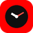

TubeClock
Digital Clock for YouTube™
Live Preview
Sun, Sep 27
10
:
05
:
42
AM
Time Format
12-Hour
24-Hour
Show Seconds
Display seconds counter (:ss)
Show Date Badge
Include weekday and date
Blinking Separator
Pulse the colon every second
Font Style
Modern
Digital Mono
Color Theme